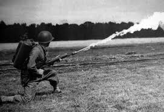

STORIA - Prima Guerra Mondiale
28 giugno 1914 assassinio dell'arciduca Ferdinando d'Austria e ultimatum alla Serbia, dato un settimana dopo, che fu rifiutato e scandì l'inizio della Guerra
L'inizio della guerra fu di movimento e il 22 agosto ebbe inizio la guerra di frontiera tra Germania e Francia. Dopo le prime conquiste tedesche entrambe le fazioni cominciarono ad attuare manovre per aggirarsi arrivando fino al mare.
Da lì ebbe inizio la logorante guerra di posizione
Da lì ebbe inizio la logorante guerra di posizione
Sul fronte orientale la situazione tra Austro-Ungarici e Serbi si stabilì fin da subito a causa dell'ostinata resistenza serba che riuscì a respingere più volte l'esercito austro-ungarico che fu respinto anche sul fronte russo dove il fronte si stabilizzò con lunghi sistemi trincerati
Durante questo periodo l'Italia decise di rimanere neutrale poichè cercava dei migliori vantaggi territoriali in cambio del suo intervento.
L'Italia rimase così divisa tra interventisti(volevano le regioni ancora in mano austriaca) e neutralisti(l'Italia avrebbe avuto enormi guadagni vendendo armi a entrambi)
L'Italia rimase così divisa tra interventisti(volevano le regioni ancora in mano austriaca) e neutralisti(l'Italia avrebbe avuto enormi guadagni vendendo armi a entrambi)
L'Alleanza non perse tempo e firmò con l'Italia il Patto di Londra.
Fu così che l'Italia entrò in guerra il 24 maggio 1915 dichiarando guerra all'Austria-Ungheria
Fu così che l'Italia entrò in guerra il 24 maggio 1915 dichiarando guerra all'Austria-Ungheria
Il secondo anno di guerra si può considerare completamente di posizione poichè nessuno tra le fazioni che si scontravano riuscivano ad avanzare.
I soldati rimasero così ammassati per i quattro anni di guerra nelle trincee che solcavano centinaia di chilometri
I soldati rimasero così ammassati per i quattro anni di guerra nelle trincee che solcavano centinaia di chilometri
L'esercito tedesco e anglo-francese stilarono un piano per sbaragliare le truppe dell'avversario: i tedeschi a Verdun e gli anglo-francesi sulla Somme.
I tedeschi furono i primi ad attaccare riuscendo ad arrivare quasi a Verdun ma furono fermati dagli anglo-francesi. Questi ultimi spostarono l'attenzione tedesca verso l'assalto della Somme che fece cominciare a far perdere interesse per Verdun ai tedeschi
I tedeschi furono i primi ad attaccare riuscendo ad arrivare quasi a Verdun ma furono fermati dagli anglo-francesi. Questi ultimi spostarono l'attenzione tedesca verso l'assalto della Somme che fece cominciare a far perdere interesse per Verdun ai tedeschi
Il 15 settembre gli inglesi usarono per la prima volta i carri armati.
Il 15 settembre 1916 gli austro-ungarici sferrarono un attacco in Trentino defnito la "spedizione punitiva" contro il tradimento dell'Italia.
Cadorna decise quindi di contrersi sull'Isonzo, dove riuscì ad arrivare a Gorizia
Il 15 settembre 1916 gli austro-ungarici sferrarono un attacco in Trentino defnito la "spedizione punitiva" contro il tradimento dell'Italia.
Cadorna decise quindi di contrersi sull'Isonzo, dove riuscì ad arrivare a Gorizia
Il terzo anno di guerra fu il difficile per tutti con enormi perdite e crescenti difficoltà di approvigionamento. Si ebbe anche il primo uso di lanciafiamme e delle prime bombe contenenti gas asfissianti
La Russia, dopo aver assaltato l'Austria facendo quasi capitolare la capitale austriaca per aiutare l'Italia, ebbe enormi perdite che fecero perdere la disciplina ai soldati e fece scoppiare rivolte nella capitale.
Il 15 marzo 1917, dopo una rivolta che fece capitolare lo zar, si instaurò un governo rivoluzionario guidato da Lenin che dopo lunghe trattatie il 1° dicembre fece uscire la Russia dalla Guerra
Il 15 marzo 1917, dopo una rivolta che fece capitolare lo zar, si instaurò un governo rivoluzionario guidato da Lenin che dopo lunghe trattatie il 1° dicembre fece uscire la Russia dalla Guerra
Il 31 luglio gli inglesi attaccarono Ypres per ottenere le basi dei sommergili tedeschi. L'attacco fallì a causa delle forti piogge che fecero diventare il campo di battaglia un mare di fango
Sul fronte dell'Isonzo sferrarono due offensive che vennero subito bloccate e gli austriaci aiutati dai tedeschi sferrarono una controffensiva spezzando il fronte italiano a Caporetto(23/24 ottobre 1917). Gli italiani riuscirono a fermara l'avanzata austro-tedesca sulle rive del Piave
L'ultimo anno di guerra fu decisivo e segno fin da subito chi sarebbe riuscito a prevalere. Germania e Austria anche se avevano una situazione interna ormai insostenibile decisero comunque di riunire le truppe per spezzare la resistenza avversaria prima dell'arrivo degli americani. I tedeschi attaccarono il 21 marzo facendo arretrare i francesi fino alla Marna
Anche se internamente l'Austria viveva un grossa crisi l'esercito si manteneva saldo. A peggiorare la situazione austro-tedesca furono le richieste di pace di Turchia e Bulgaria. Fu allora che il generale Diaz coordinò una grande offensiva che ebbe inizio il 24 ottobre che sfondò il fronte austriaco a Vittorio Veneto. Il 3 novembre 1918 l'Austria firmò l'armistizio che segnò la fine della guerra sul fronte italiano
L'offensiva delle Mosa-Argonne fu la prima offensiva autonoma americana per costringere alla ritirata i tedeschi. Le forze statunitensi condussero la gran parte degli assalti anche se dimostraronogravi carenze tattiche e mancanza di esperienza. Fino al novembre gli assalti frontali furono bloccati dalle truppe tedesche
 L'11 novembre, a causa di agitazioni che fecero abdicare il kaiser e instaurarono la repubblica, la Germania chiese la sospensione delle attività
L'11 novembre, a causa di agitazioni che fecero abdicare il kaiser e instaurarono la repubblica, la Germania chiese la sospensione delle attività
ITALIANO - Ungaretti
Nasce ad Alessandria d'Egitto da genitori italiani.
Nel 1912 si trasferisce a Parigi dove avrà un contatto con la poesia decadente e simbolista.
Nel 1914 si arruola e viene inviato sul Carso.
Alla fine del 1916 pubblica "Il porto sepolto" e nel 19 "Allegria di naufragi" confluite, poi, entrambe nel "L'allegria"
Muore nel 1970 a Milano
Nel 1912 si trasferisce a Parigi dove avrà un contatto con la poesia decadente e simbolista.
Nel 1914 si arruola e viene inviato sul Carso.
Alla fine del 1916 pubblica "Il porto sepolto" e nel 19 "Allegria di naufragi" confluite, poi, entrambe nel "L'allegria"
Muore nel 1970 a Milano
Raccolte di poesie pubblicato nel '31 suddiviso in 5 sezioni: Ultime, Porto sepolto, Naufragi, Girovago, Prime.
"Porto sepolto" e "Allegria di naufragi" gli scrisse in guerra sui pezzetti di carta che gli capitavano.
I componimenti sono a versi sciolti con un ampio utilizzo di analogie
Nei componimenti si contrappongono la voglia di vivere e l'ottimismo, e la desolazione della guerra, la morte il pessimismo
"Porto sepolto" e "Allegria di naufragi" gli scrisse in guerra sui pezzetti di carta che gli capitavano.
I componimenti sono a versi sciolti con un ampio utilizzo di analogie
Nei componimenti si contrappongono la voglia di vivere e l'ottimismo, e la desolazione della guerra, la morte il pessimismo
Veglia
Notte passata vicino al cadavere di un compagno. Attaccamento alla vita
Notte passata vicino al cadavere di un compagno. Attaccamento alla vita
Soldati
Condizione precaria dei soldati paragonata alle foglie di un albero autunnale
Condizione precaria dei soldati paragonata alle foglie di un albero autunnale
In memoria
Poiezione della popria esperienza da uomo senza patria nella storia dell'amico conosciuto a Parigi morto suicida
Poiezione della popria esperienza da uomo senza patria nella storia dell'amico conosciuto a Parigi morto suicida
 Il porto sepolto
Il porto sepoltoTesto di apertura dell'omonima raccolta dove viene spiegato il ruolo della magico-misterioso della poesia
San Martino del Carso
Descrizione della desolazione portata dalla guerra
Descrizione della desolazione portata dalla guerra
Fratelli
Soldati paragonati alle foglie appena nate e che cercano solidarietà nei compagni
Soldati paragonati alle foglie appena nate e che cercano solidarietà nei compagni
I fiumi
Autobiografia del poeta attraverso i fiumi della sua vita
Autobiografia del poeta attraverso i fiumi della sua vita
Mattino
Descrizione del sorgere del sole. Senso di immensità e infinito
Descrizione del sorgere del sole. Senso di immensità e infinito
Sistemi - Comunicazione wireless
Durante la Grande Guerra la comunicazione wireless venne ampliamente usata. Marconi perfezionò questa tecnologia tanto da poter spedire messaggi oltreoceano. L'unico limite era il poter inviare solo codici morse
La IEEE nel 1977 e nel 1999 creò due standard per la comunicazione wireless: 802.11a e 802.11b
• 802.11a
Velocità 54Mbps a 5,2GHz• 802.11b
Velocità 5,5Mbps e 11Mbps a 2,4GHz
Velocità 54Mbps a 5,2GHz• 802.11b
Velocità 5,5Mbps e 11Mbps a 2,4GHz
 Nel 2003 l'IEEE fu adottao l'802.11g alla velocità di 54Mbps a 2,4GHz
Nel 2003 l'IEEE fu adottao l'802.11g alla velocità di 54Mbps a 2,4GHz
802.11b e 802.11g dividono lo spettro in 14 canali(13 utilizzabili in Europa) da 22MHz. I canali sono parzialmente sovrapposti quindi le sequenze usate sono 1-6-11, 2-7-12 eccetera
GPO - Beni informazione
Il taylorismo introdusse, durante la seconda rivoluzione industriale, il concetto di divisione del lavoro e della catena di montaggio. Ogni compito doveva essere semplice e reiterabile
Il marginalismo è la scuola di pensiero economica avuta per entrambe guerre mondiali. Al centro degli studi pone le nozioni di uilità e scasità dei beni e il carattere individuale della motivaione economica di base. Nasce così la microeconomia
La microeconomia si occupa del comportamento dei singoli agenti economici
L'utilità marginale si occupa dell'utilità che un bene assume in una situazione pradossale. Ad esempio una persona nel deserto, se gli vengono offerti dell'acqua e un diamante sceglierà l'acqua ma una volta dissetato il suo interesse si sposterà verso il diamante
Come prescrive il modello marginalista, la parola chiave per studiare i processi microeconomici è la scarsità dei beni. Un bene è scarso quando non è disponibile, per chiunque lo desideri e assume così un rilievo economico, e siccome non sono presenti in quantità tale da soddisfare le esigenze di ogni operatore economico, bisogna gestirli mediante delle scelte